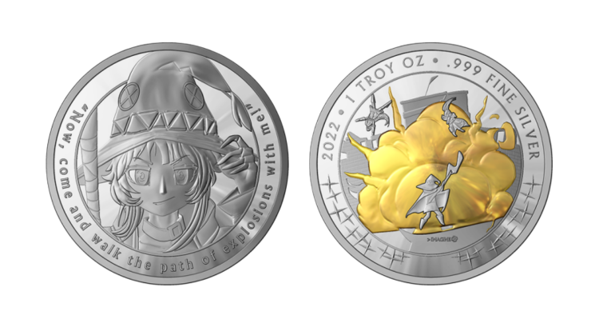

___.__ __. _______ ____ __ ____ _______. ___
/ /| \ | | | ____|\ \ / \ / / / | / /
/ / | \| | | |__ \ \/ \/ / | (----` / /
/ / | . ` | | __| \ / \ \ / /
/ / | |\ | | |____ \ /\ / .----) | / /
/__/ |__| \__| |_______| \__/ \__/ |_______/ /__/
ALL YOUR WAIFU COIN NEWS
[Home/Shop/Coins/News/About-Us]
hello everyone! it is with great pride and gusto that we are announcing the release of Megumin coin. we have been working extraordinarily hard on producing
this design and it has culminated in what we believe to be a fantastic looking coin so far. as with our last launch, there will only be a limited number
100 gilded megumin coinS and the serialized coins will no longer be sold a month from this date.(and if you happen to miss out, there will be a limited stock
unserialized coins available after the entire run is complete)
Update! 23/9/2022
How are you all doing today? We have a pile of news for you and we want to go over everything. First thing on the menu is the website. How are you guys finding it so far?
We know somebody was able to solve the secret and was able to snag a juicy 10% off his cart. We have some more stuff planned for the website and we are working on
bringing the store and main site together.
Moving on to some other things, as you know Yotsuba is complete and at this point the only way to get her is the secondary market or on our store. Beyond that its hard
to say that yotsuba was anything other than a resounding success and we are eternally grateful for all of you. It means the world to have you guys in our corner.
Another big thing to mention is our constant vacations, We want to make things work everywhere we post but sometimes you gotta know when to call it. We will still be
there lurking and posting when we can but don't be surprised if we vanish for a week. If you want to reach out and give us some ideas or advice or any what have you,
you are always free to reach out to us on the twitter or the email.
Now, I know this is what you are reading for. You want to know when the fabled Megumin coin is coming. It's only a tiny bit late but we have the final renders in hand
and we will be launching next Friday night at midnight. We do love our midnight releases, brings you back to the days of staying up late to catch your favorite show
or standing in line for a new game/console. We hope she looks as good to you as she does to us, We put a lot of work In making her the best we could so show her some
love next week.

Show Time! 23/9/2022
Hello there! For just about all of you this should be your first time seeing our little website. We hope you find it as SOVLful as we do.
We ran into a few hiccups getting things together so the website/shop split is our stop gap while we work on something even nicer.
Now I know why some of you are here and that's because some people missed out or want to buy even more Yoruba coins.
Sit tight for a little bit longer, by the time you see this it should be a few hours before we make the Yotsuba's active on the store (12AM EST).
Feel free to look around between now and then, and I mean really take a look. We have some fun surprises hidden around for the more inquisitive users out there.
If you do happen to notice anything a bit broken, email us and we will see to it that its fixed.
Genesis 11/9/22
Well...One of you nosey little rascals found the site!
We were planning on keeping this a little bit under wraps until the release of Megumin Coin but if you're reading this, that clearly didn't happen!
The site is still being worked on a bit (because we didn't expect you to be here!) so be please patiant with us.